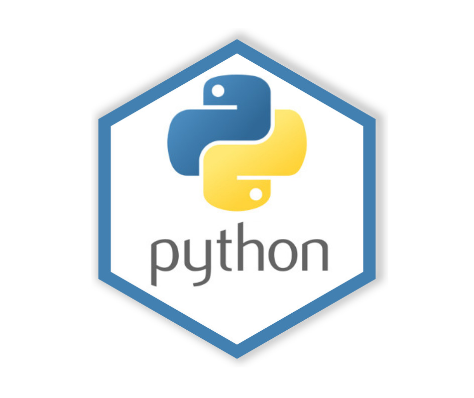
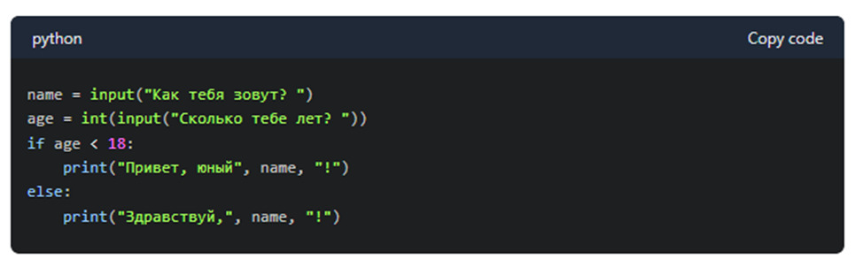

1. История создания
Разработка языка Python началась в конце 1980-х годов сотрудником голландского института CWI Гвидо ван Россумом. Язык задумывался как преемник языка ABC, способный работать в операционной системе Amoeba и взаимодействовать с системными вызовами.
Первый официальный релиз (версия 0.9.0) состоялся в феврале 1991 года. Название языка произошло вовсе не от семейства пресмыкающихся, а в честь популярного британского комедийного телешоу «Летающий цирк Монти Пайтона», фанатом которого являлся автор.
2. Краткий обзор языка

Python — это высокоуровневый, интерпретируемый язык программирования общего назначения. Его философия ставит в главу угла читаемость и лаконичность синтаксиса. Основные области применения сегодня — это Data Science, веб-разработка, автоматизация скриптов и машинное обучение.
Ключевые особенности (Маркированный список):
- Динамическая типизация;
- Автоматическое управление памятью (со сборщиком мусора);
- Кроссплатформенность и поддержка мультипарадигмальности.
Популярные библиотеки (Список с картинкой-маркером):
- Django (Веб-разработка)
- NumPy (Вычисления)
- Pandas (Анализ данных)
Этапы развития (Нумерованный список):
- Python 1.0 — появление базовых функциональных инструментов (1994 г.).
- Python 2.0 — введение списковых включений и сборщика мусора (2000 г.).
- Python 3.0 — кардинальная переработка и отказ от обратной совместимости (2008 г.).
Сравнение версий Python
| Версия | Дата релиза | Главное нововведение |
|---|---|---|
| Python 1.0 | Январь 1994 | Лямбда-функции, map, filter |
| Python 2.0 | Октябрь 2000 | Списковые включения (List comprehensions) |
| Python 3.0 | Декабрь 2008 | Полный переход на Unicode по умолчанию |
3. Примеры кода
Ниже представлена классическая программа, демонстрирующая синтаксис языка:
def greet_user(name):
# Функция приветствия пользователя
if name == "Admin":
print("Доступ разрешен. Привет, Администратор!")
else:
print(f"Привет, {name}!")
greet_user("Pythonist")